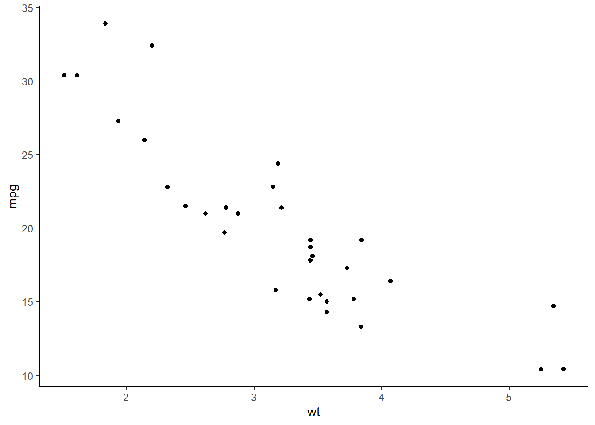

Chapter 1 Getting started
If you’ve reached this step, you should have already installed the gaelsdown and tinytex packages and knit your first document (this one!). If not, first take a look at the README for instructions explaining these steps.
1.1 Writing in markdown
In RStudio, you write in Pandoc Markdown to generate publishable documents. That means this is a valuable skill even if you’re not using a LaTeX template, and it’s also an easy skill to pick up. The basic principle behind markdown is that it should be easy to read even in plain text, and it accomplishes this by using special characters in intuitive ways.
For example, to italicize (emphasis) a word or line of text, you place it inside a pair of underscores or asterisks like so: _italicize_. To make a line boldface (strong emphasis), you put with two underscores or asterisks: __boldface__.
Where you start to get into real power of markdown is the ability to structure a document, such as by using headers. I mark the beginning of this chapter with a level-one header, # Getting started, and the beginning of this section with a level-two header, ## Writing in markdown. If, say, we wanted to jump to another chapter, I could include a link using the header name [Introduction]: Introduction.
For a full primer on the features available in Pandoc Markdown, including the ability to insert lists, blockquotes, code chunks, and math, read this tutorial.
1.2 Figures and tables in R markdown
If you looked through the Pandoc Markdown tutorial, you may have noticed that there are features to include tables and images. However, the beauty of R markdown is that you can insert tables and figures using R code, then allow knitr to convert this code into a markdown format. To do this, I’ll first need to load some R packages:
# List of packages required for this analysis
pkg <- c("dplyr", "ggplot2", "knitr", "bookdown", "devtools")
# Check if packages are not installed and assign the
# names of the packages not installed to the variable new.pkg
new.pkg <- pkg[!(pkg %in% installed.packages())]
# If there are any packages in the list that aren't installed,
# install them
if (length(new.pkg))
install.packages(new.pkg, repos = "http://cran.rstudio.com")
# Load packages (This can be accomplished by just loading gaelsdown)
library(gaelsdown)Once the packages are loaded, I can assemble a basic table with R like so:
mtcars %>% head() %>% kable()| mpg | cyl | disp | hp | drat | wt | qsec | vs | am | gear | carb | |
|---|---|---|---|---|---|---|---|---|---|---|---|
| Mazda RX4 | 21.0 | 6 | 160 | 110 | 3.90 | 2.620 | 16.46 | 0 | 1 | 4 | 4 |
| Mazda RX4 Wag | 21.0 | 6 | 160 | 110 | 3.90 | 2.875 | 17.02 | 0 | 1 | 4 | 4 |
| Datsun 710 | 22.8 | 4 | 108 | 93 | 3.85 | 2.320 | 18.61 | 1 | 1 | 4 | 1 |
| Hornet 4 Drive | 21.4 | 6 | 258 | 110 | 3.08 | 3.215 | 19.44 | 1 | 0 | 3 | 1 |
| Hornet Sportabout | 18.7 | 8 | 360 | 175 | 3.15 | 3.440 | 17.02 | 0 | 0 | 3 | 2 |
| Valiant | 18.1 | 6 | 225 | 105 | 2.76 | 3.460 | 20.22 | 1 | 0 | 3 | 1 |
Alternatively, I may want to produce a plot:
ggplot(data = mtcars, aes(x = wt, y = mpg)) +
geom_point() +
theme_classic()
I’ll have some tips on how to make your tables and figures look great in the next chapter on [Advanced methods].
1.3 Assembling your thesis
Although the final product you obtain using gaelsdown will likely be a single document contained in one file, there are multiple files that go into creating this document. There’s a simplicity to this in that each individual file has a specific function within the larger document, and I’ll explain how you can customize the structure of your thesis by adding or removing certain files or sections.
1.3.1 YAML Ain’t Markup Language
Every thesis generated using this template has an index.Rmd file. This is the file you use to knit the document, and it contains your YAML section (recursively named, “YAML Ain’t Markup Language”). Information from the YAML is passed onto Pandoc, and may include specifications for the output format and other options. You can also include frontmatter material here, such as your abstract.
Open up index.Rmd in RStudio to see what the YAML looks like. It’s the section at the beginning bracketed by three dashes:
---
---You need to be particularly attentive to the spaces in the YAML, so make sure when uncommenting lines you only remove the # and not the spaces!
At the top of the YAML are some pieces of information that get passed along to the title page, such as the title and author name. Since the format for title pages are set for Queen’s University, you’ll want to change the answers to these entries, but not which lines are included (To change the format of the title page, you’d have to go into the .tex template).
Following this you’ll find your output options. Here, you have the option of either PDF, gitbook (web page), Word, and EPUB; to change the format, just comment out the active line and uncomment the appropriate line. After this are lines for your introductory material: abstract, acknowledgements, glossary, etc. These sections are frontmatter, will appear before the Table of Contents, are numbered with Roman instead of Arabic numerals, and won’t be labelled as chapters.
Frontmatter is a bit quirky in that it needs to be read directly into LaTeX, so the frontmatter sections have to be defined in the .tex template and the YAML. I’ve defined all of the required and optional frontmatter sections specified for Queen’s University theses, with some of them commented out. If you want to include frontmatter in another output format such as Word, then it has to be defined in the body of the .Rmd file, not the YAML.
After this are instructions for your references section. There’s some defaults here for this document but you’ll want to specify your own bib and csl file. The process for using these are the same as in bookdown, so for instructions on how to specify the bibliography and csl sections, follow Yihui Xie’s tutorial here.
1.3.2 Folders and files
Upon creating your gaelsdown project in RStudio, your folder will have the following files and folders:
1.3.2.1 bib/
In here is your .bib file, specified in the YAML.
1.3.2.2 csl/
In here is your .csl file, specified in the YAML.
1.3.2.3 data/ and figure/
These are just folders for example data and figures; you can set the folders as you wish for scripts, etc.
1.3.2.4 _bookdown.yml
Configuration file for bookdown, the package underlying gaelsdown. You can change the output file and chapter prefixes here; see the bookdown reference for more information.
1.3.2.5 01-chap1.Rmd, 02-chap2.Rmd…
These are the main chapters of your thesis, which gaelsdown will join into one document. The .Rmd files in your main directory will all be knit together, so you can add as many files as you need and it’s not necessary to follow this naming format (it just makes things easier to read).
1.3.2.6 98-references.Rmd
Your references come after every section apart from the appendix.
1.3.2.7 99-appendix.Rmd
The appendices come after the references. You can add as many appendix sections as necessary.
1.3.3 Library calls and importing data
To
1.4 Summary
In this section, I’ve covered
Within your
- Index.Rmd: YAML
- frontmatter
- yaml instructions
- bib and cls files
- Library calls and data import
- Folder structure
Diagram!